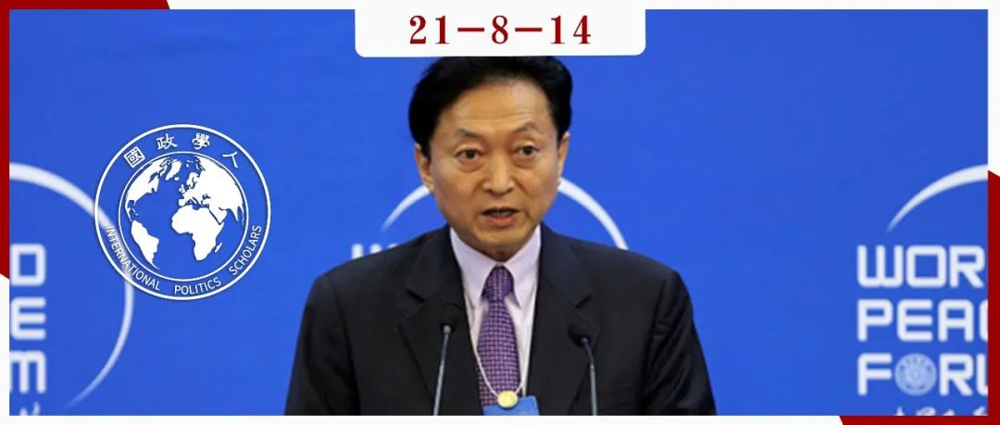

收录于合集

作品简介
作者： 鸠山由纪夫（Yukio Hatoyama）, 日本第93届内阁总理大臣（首相）、前日本民主党常任干事会代表（党首）、东亚共同体研究所理事长、西安交通大学荣誉教授、西北农林科技大学名誉教授。鸠山由纪夫于2009年当选日本首相，是日本著名的“亲华派”政治家，提倡“友爱外交”并提出了“东亚共同体构想”。
编译： 黎开朗（国政学人编译员，立命馆大学国际关系学院）
来源： Yukio Hatoyama (2021) US-China Rivalry and Japan’s Strategic Role, The Washington Quarterly , 44:2, 7-19, DOI: 10.1080/0163660X.2021.1932093
归档： 《国际关系前沿》2021年第8期，总第35期。

内容导读
本文主要是作者为如何缓和中美关系和日本应该在中美之间扮演一个怎样的战略角色的建议。作者首先给了拜登政府三个建议： 1. 避免陷入外交事务上的民主价值陷阱 2. 在推行对华战略时，不应将自己的议程强加给美国的盟友和伙伴 3. 应该寻求与中国在更广泛的领域进行合作。 同样的，作者也对中国提出了建议，认为其必须履行作为大国的责任。此外，作者还提出了如建立信息通讯的全球标准以及在东亚推行裁减导弹等建议。最后作者认为，日本应该在中美之间扮演调解人的角色，并且中日也应该就钓鱼岛争端达成互相不进入的协议。
文章导读
01
引言
美国总统特朗普是第一个把中美竞争公开化的总统，而其继任者拜登一直指出中美之间的分歧无法再次弥合。拜登政府发布的《国家安全战略中期指导方针》（Interim National Security Strategic Guidance）也表明，除了一些言辞上的不同以外，新政府对中国的立场与特朗普政府几乎没有区别。尽管如此，自拜登政府上任以来，中国方面的行为没有发生任何变化。由于中美分歧本质上是修昔底德陷阱（Thucydides trap）的结果，所以新政府上台后，中美关系没有发生翻天覆地的变化也就不足为奇。任何发生在两个世界大国之间的零和竞争将毫无疑问地会破坏东亚乃至是世界的和平与繁荣，所以即便中美冲突是不可避免的，我们也不能坐以待毙，任由事态升级。
在2021年4月16日，日本首相菅义伟与美国总统拜登在华盛顿会晤，发表了美日联合领导人声明：美日面向新时代的全球合作伙伴（US-Japan Joint Leaders’ Statement: “U.S.-Japan Global Partnership for a New Era.”）。本文作者希望借此机会，提出一些旨在管控中美紧张局势的建议以及日本应该发挥怎样作用的看法。
02
给拜登总统的三个建议
1. 避免陷入外交事务上的民主价值陷阱
作者首先对拜登政府给出了以下三个建议。 第一,拜登政府不应该在外交事务方面过分强调包括民主等价值。 如今世界最关心的是如何管理中美关系。然而，寻求保持对民主和人权等价值观的忠诚，意味着冒着谴责和排斥那些不认同这些价值观的国家的风险，进而导致对方也以同样的方式做出回应。最终，美国越强调以价值观为导向的外交，中美冲突就变得越激烈。如果美国过分强调民主和人权，不仅有使中国和俄罗斯疏远的风险，还有使其他非民主国家疏远的风险，并且非民主国家也绝不在少数。据统计，世界上共有92个国家处于“封闭专制”（closed autocracies）和“选举专制”（electoral autocracy）之间，占世界国家总数的51%和世界人口的54%。如果这些国家加强与中国和俄罗斯的关系，那么拜登政府将难以实现其外交目标。作者认为 外交的本质是探索拥有不同价值观的国家能相处得多好。 作者建议美国在试图批判中国之前，应该告知中国， 两国和平共处是竞争的基本前提。 至少，美国也应该宣布接受传统定义上的“一个中国”政策，避免任何误解。
2. 更好地理解盟友所面临的相互依存困境
第二,拜登政府在推行对华战略时，不应将自己的议程强加给美国的盟友和伙伴。 拜登政府上台后表达了其想要动员盟友和伙伴来对抗专制国家的意图。随着过往外交政策的回归，拜登政府将会更加热衷于与其盟友组成反对中国的统一战线。然而，与冷战时期不同，这些盟友不可能简单的在中美之间选边站。比如日本，其在1985年与美国的贸易额占总额的29.5%，与苏联和其他东欧国家的贸易额只占1.6%，而如今无论是从贸易还是访日游客占比来看，中国都要胜过美国。此外，安全领域的情况也很不简单，美日之间利益的一致经常被认为是理所应当的。尽管很多日本人认为美国军事基地的驻扎是为了保卫日本，然而，中美之间最有可能发生军事冲突的情况是在涉及台湾的紧急情况。几乎所有日本人都不会接受驻日美军基地可能被用来为台湾独立服务，或者日本可能在这种紧急情况下为台湾而战的想法。在经济合作方面，中国成功签署了《区域全面经济伙伴关系协定》(RCEP)和与欧盟的全面投资协定(CAI)。但中美双方并不应该把此类事态解释为有关国家“选择”了中国和“抛弃”了美国。然而，这也清楚地表明，这些国家确实打算与中国在共同繁荣中共存。如果中美两国都能听取其盟友和伙伴的意见（其中许多国家并不确定如何管理横跨中美分歧的一系列复杂利益），这也将在管控冲突方面发挥积极作用。
3. 就共同挑战与中国重新接触
第三,美国应该寻求与中国在更广泛的领域进行合作。 作者指出目前的问题在于美国正在试图缩小与中国合作的领域，而更加强调与中国的竞争。目前中美之间可以合作的领域主要是全球变暖和应对新冠疫情。如果美国打算适当控制与中国的冲突，就应该呼吁中国在更广泛的领域进行合作。只有在中国不回应的情况下，美国才应该宣布向竞争层面过渡。这种方式也将使盟友更容易与美国步调一致。虽然特朗普政府批评了过往美国政府对中国的接触政策，但作者认为认定中国完全拒绝了国际秩序也是不正确和过于简单的，最明显的证据就是中国在气候变化问题上立场的改变。作者认为美国不应放弃其接触战略，而应该集中精力进行改革。作者也认为美国政府在其对华战略中强调竞争是像掩盖一种挫败感，即美国可能会被中国赶超。然而，作者建议美国需要冷静，因为中国的国力不大可能完全超越美国。不管是在军费还是核武器数量上，中国都无法与美国匹敌。就人口动态和经济增长潜力方面，美国在中长期内比中国仍具有相当大的优势。因此，作者的观点是， 从长远来看，中国追赶美国的现状将持续到本世纪中叶。 换言之，美国有足够的时间和空间与中国重新接触，并在改革后的接触政策下探索合作的可能性。
03
中国必须履行大国责任
作者认为一个解决中美冲突的有效决议同时也需要中国方面的改变。在过去的30到40年里，中国成长为了一个大国。 作者认为 其向大国的转变，得益于二战以来美国建立的全球体系。中国已将此视为既定事实，似乎打算在未来继续维持现状。作者认为 这不是好兆头，并且中国必须以更明显的方式承担比目前更大的责任。 而最有效的方法则是中国应该放弃世界卫生组织的特殊与差别待遇（S&DT，译者注：指发展中国家可在WTO谈判中做出比发达国家少的承诺）。中国作为目前世界第二大经济体，已经成功地在消除贫困方面做出了努力。但巴西作为一个人均GDP比中国更低的国家，都已经放弃了世界卫生组织的特殊与差别待遇。如果中国也能放弃的话，国际社会无疑会把此视为中国成为一个负责任大国的承诺。作者称美国与中国应该在平等的条件下进行。在正确评价中国政府在保护知识产权和打击网络攻击方面所做的稳步努力的同时，作者希望中国政府进一步加强和加快这些领域的措施。此外，在美国希望与中国合作的领域，中国应该收回其政治手段，把与美国的协商放在首位。作者认为 重建两国之间失去的信任，用合作取代竞争和冲突并以此作为双边关系基石的唯一可行方法是一步一步走向合作。 而对于中国的“战狼外交”，作者持一个否定的态度，认为中国在世界范围内树立更多敌人的损失远远大于在国内提升其国家威望的收获。
04
超越气候和疫情：中美接触的优先事项
除了气候变动和疫情，作者认为中美两国还需要在两个重要的战略领域相互接触，即控制信息通讯技术（ICT）的脱钩和管控东亚新的军备竞赛。
1. 建立信息通讯的全球标准
在当今世界，国家间竞争的命运取决于先端技术的观点已经是共识。作者认为美国和其他志同道合的民主国家禁止中国进入其市场是一条危险的道路，建议在信息通讯技术领域，美国和中国应该以共存为目标。在未来，中国和美国的独立技术标准很有可能会并存，并且中国企业能够通过中国国内或亲中国家的供应链采购零部件。即便中国未能在数字领域建立自己的技术标准和供应链，如果其在数字经济以外的贸易或投资领域进行反击，美国及其盟友(包括日本)将会遭受严重的影响。作者就其个人而言，不愿接受这样的风险和不确定性。不可否认，中国企业在数字经济领域，其价格和表现方面都具有竞争优势。如果美国希望将中国企业排除在外，并迫使其盟友就范，就需要提供明确的解释。但在实际操作中，美国的理由是模糊且不充分的。作者认为 更公平的做法是为高科技通信设备制定技术标准，以及为网络安全制定统一的全球标准，并建立在符合这些标准的情况下，不阻止使用任何国家的产品和服务的机制。 同时，也有必要去建立一个全球系统监管这些标准是否被遵守。 如果能够建立这样的机制，即便是那些没有回旋余地或必要技术在网络安全方面投入资源的发展中国家也将能够安心地享受数字化的好处。 作者认为拜登政府不应该优先考虑民主国家之间的共同规则制定，而是应该呼吁中国从一开始就参与制定尖端技术共同规范和标准的任务。 而中国也必须表现出尽可能高的灵活性，否则中国参与谈判可能会被视为一种拖延战术，并有可能让世界走向一个中国被排除在外的最坏情况。
2. 在东亚推行裁减导弹
美国和中国对东亚安全的未来负有最大的责任，双方必须与日本一道，共同努力在该地区推进导弹裁军或建立军备控制体系。自2019年8月退出中导条约（Intermediate- Range Nuclear Forces(INF) Treaty）以来，美国试图从21世纪20年代中期开始在东亚部署中导条约禁止的地面发射导弹，以缩小与中国在该地区的导弹差距。然而，这有可能会引发连锁反应，导致整个亚洲朝着导弹扩张的方向发展，进而使得东亚将会成为世界的火药桶。因此，作者认为当前最紧迫的是需要中美俄三国在东亚和西太平洋地区缔结类似于中导条约的反导条约。但作者依然认为在如今的东亚缔结类似中导条约的可能性极低。尽管冷战期间美国和苏联在军事前线实现了平等，但至少在战略核武器方面，美国远远领先于中国。并且在台湾问题日益紧张的情况下，削减中国的中程导弹武器库，对中国而言将会是生死攸关的问题。作者认为唯一取得进展的方式是日本充当中美之间的调解人。如果美国想要在亚洲部署导弹，那么日本将会是一个绝佳的选择。但现实是日本对接受美国导弹并不太感兴趣。如果日本反对部署导弹的话，美国将无法无视其意愿，那么日本可以借机向中美施压，要求缔结亚洲版的中导条约。如果日本能率先与韩国和东盟国家合作，对施加在中美的影响力将大大增加。为此，日本必须对其侵略和殖民统治历史保持谦逊的立场。
3. 中日都不能进入钓鱼岛
最后，作者提议中日双方应该通过缔结条约来管控领土争端。作者的建议是， 日本政府正式承认与中国在钓鱼岛存在领土争端，然后两国搁置领土争端，同意不进入钓鱼岛周围的领海和邻近地区。 迄今为止，日本政府一直坚持自己的立场，即主张钓鱼岛不存在需要解决的领土争端。然而在全球范围内，只有日本政府持这种观点。而日本承认领土争端不会有任何实质性的损失。如果日本承认钓鱼岛是有争议的地区，那么中日两国都有足够的理由宣布该地区为禁区。中国的海警船经常进入钓鱼岛周围的水域，理由是日本渔船的入侵。如果日本不进入该地区，中国也将无法进入，并且一项阻止中日两国进入这些岛屿周围水域的协议也将对美国有利。 最后，虽然中美之间日益加剧的分歧像是一股不可阻挡的大趋势。然而，如果某人于某地谈到一个理想，怀着不放弃的信念将其转化为具体的行动，改变历史的进程也绝非不可能。
译者评述
本文作者对中美关系的改善和日本在其中扮演的角色提出了自己的想法。译者认为作者的想法如果能够付诸实践，并且最终成功的话，的确能够在一定程度上改善中美之间的关系，延缓中美之间的冲突。然而，问题在于是否能够付诸实现，以及能够在多大程度上付诸实践。比起更加实际的政策建议，译者更倾向于认定鸠山的想法为“空想”，或者是过于“理想主义”。
首先、针对拜登政府的三条建议之中，让拜登政府放弃过分强调价值观的外交几乎不可能。 民主、自由等所谓的“普世价值”一直被视为是民主党外交政策的基石。对于美国国内支持拜登政府的人而言，放弃对这些“普世价值”的追求，必然是很难接受的。拜登在上任之前就强调，不止要恢复美国国内的民主，还要组织一次“全球民主峰会”，试图团结世界上的民主国家。不可否认的是，美国的价值观在其许多盟国的民众之中确实很有市场。所以支持美国的价值观也就意味着美国的盟友也能在一定程度上得到其国内民众的支持。对于不管是内政还是外交都强调民主的拜登而言，越强调价值观就意味着其国内支持者的忠诚度越高，国外盟友也会更加支持美国。在这种情况下，即便是可能面临着非民主国家的疏远，至少在拜登的第一任期之内，对拜登的好处是多于坏处的。因此，拜登是无论如何也不会放弃强调其价值观外交的。
其二、为高科技通信设备制定技术标准，以及为网络安全制定统一的全球标准同样也是难以实现的。 诚然，确实如作者所言，全球性的标准将会给发展中国家带来数字化的好处。然而，美国的领导人相比较考虑给发展中国家带来好处，更关心的是自己的霸权能否维持。如果与中国协商的话，全球标准毫无疑问将反映中国的一部分需求和利益。但从美国的零和博弈思维来看，中国的“得”即意味着美国的“失”。所以，制定全球标准将需要美国抛弃零和博弈的思维，以及怀着在发展中国家中推进数字化进程的国际主义精神。但目前来看，现在的美国并不能满足以上这两个条件。
其三、日本难以充当中美之间的调解人。 从国内层面来讲，日本民众普遍对华不友好，对中国持不好印象的日本人比例高达89.7%。从国际层面来看，日本在过去十几年都在试图维持美国的霸权，与美国一同牵制中国，并且在美国的东北亚同盟内部日本与美国的利益一致性也要高于韩国。换言之，比起日本，韩国来当中美之间的调解人恐怕都要更为合适。同时，日本作为一个二战后被美国短暂占领，受美国影响极深的国家，其国民对于美国价值观的接受程度之高也就不言而喻。因此，对于许多日本人而言，站在美国的一边遏制且批评中国可以说是理所当然的。在东京大学研究中美关系的佐桥亮副教授在其今年7月份的新书《美中对立》中就认为，日本应该加入实现民主且自由世界的阵营之中，强烈要求中国改善“人权问题”，并且还建议日本应该直视台湾所面临的严峻形势。在拜登政府上台之后，菅义伟政府出现了不断靠近美国，疏远中国的趋势，在今年的美日声明中也加入了关于台湾的内容。拜登政府的上台也同时使得日美的身份匹配重新回升，如果拜登继续沿用其既有路线，那么日本对中国的对冲将很有可能朝着对抗的方向调整。综上，译者认为，至少从目前菅义伟政府的表现而言，日本很难充当中美之间的调解人。
最后，钓鱼岛问题很难达成协议。 从日本国内层面来看，正如上文所述，日本民众普遍对中国持不好的印象。在这种情况下，如果日本的首相承认在钓鱼岛问题上存在领土争端的话，毫无疑问是拿自己的政治生命开玩笑。就算日本承认钓鱼岛问题，鸠山又怎么能够确定中国会和日本达成中日两国都不进入钓鱼岛海域的协议呢?从中国的视角来看，钓鱼岛是中国的固有领土，那么就不存在所谓的“领土争端问题”。并且，近年的钓鱼岛争端主要是源起于日方在2012年时的“购岛闹剧”。如今日本还想与中国达成协议，既不占理，也无法得到广大中国人民的认可。所以，译者认为中日在钓鱼岛问题上很难达成协议。
但正如作者最后提到的那样，怀着不放弃的信念将理想转化为具体的行动，改变历史的进程也绝非不可能。虽然鸠山的想法很难付诸实践，但是也可以在一定程度上起到抛砖引玉的效果，吸引更多渴望和平和希望中美关系缓和的有识之士提出自己的想法。
参考文献
[1]Joseph R. Biden, Jr (2020). Why America Must Lead Again Rescuing U.S. Foreign Policy After Trump. Foreign Affairs , Vol.22, No.2, pp.64-76. Retrieved from https://www.foreignaffairs.com/articles/united- states/2020-01-23/why-america-must-lead-again.
[2]読売新聞「中国に「良くない」という印象、日本人に増えて８９・７％…海洋活動で悪化」（2020年11月17日）〔https://www.yomiuri.co.jp/world/20201117-OYT1T50284/〕
[3]Eric Heginbotham & Richard J. Samuels (2021) Vulnerable US Alliances in Northeast Asia: The Nuclear Implications, The Washington Quarterly , 44:1, 157-175, Retrieved from DOI: 10.1080/0163660X.2021.1894709.
[4]佐橋亮 『米中対立――アメリカの戦略転換と分断される世界』（中公新書、2021年）280ページ。
[5]読売新聞 「日米共同文書、「台湾の安定」と「中国の人権懸念」一致へ」（2021年4月17日）〔https://www.yomiuri.co.jp/politics/20210416-OYT1T50261/〕
[6]王广涛,俞佳儒.身份困境与对冲的扩展：中美战略竞争下日本对华政策的新动向[J].边界与海洋研究,2021,6(04):73-90.
词汇整理
Interim National Security Strategic Guidance 《国家安全战略中期指导方针》
Intermediate-Range Nuclear Forces (INF) Treaty 中导条约
closed autocracies 封闭专制
electoral autocracy 选举专制
责编 | 徐一君 尤力 丁伟航
排版 | 石寒冰 游钜家
文章观点不代表本平台观点，本平台评译分享的文章均出于专业学习之用, 不以任何盈利为目的，内容主要呈现对原文的介绍，原文内容请通过各高校购买的数据库自行下载。
好好学习，天天“在看”

国政学人
支持学术公益与知识传播
微信扫一扫赞赏作者 __赞赏
已喜欢，对作者说句悄悄话
取消 __
发送给作者
发送
最多40字，当前共字
上一页 1/3 下一页
长按二维码向我转账
支持学术公益与知识传播
受苹果公司新规定影响，微信 iOS 版的赞赏功能被关闭，可通过二维码转账支持公众号。